THREE PEAKS HOUSE

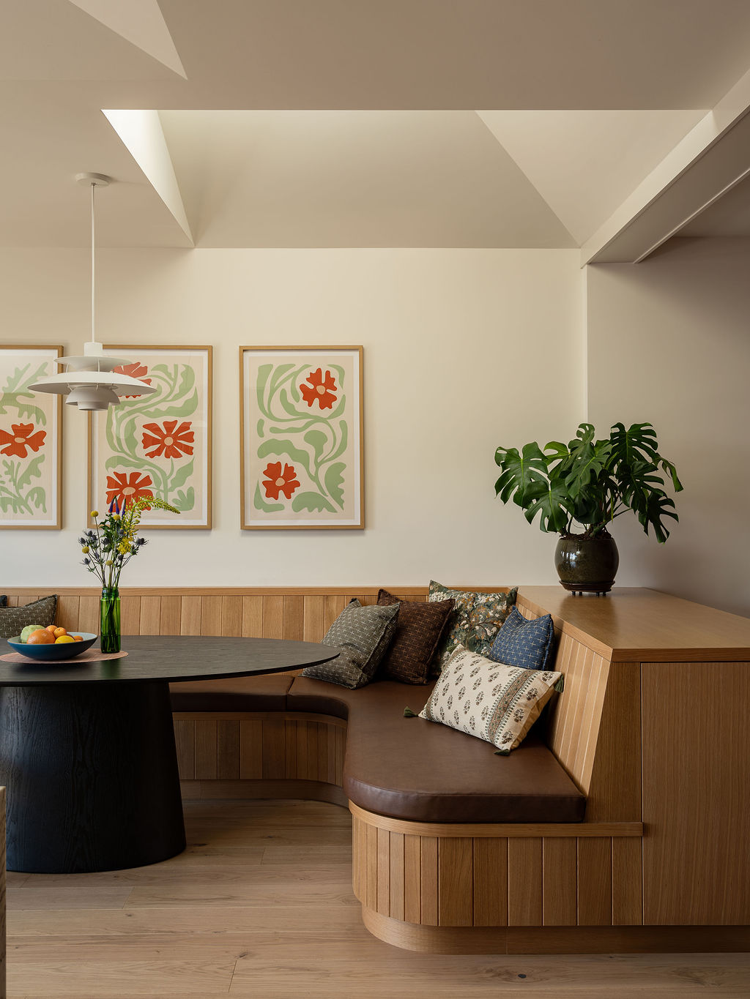
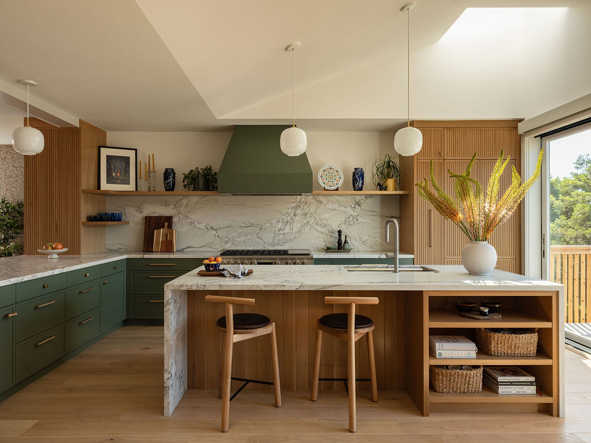
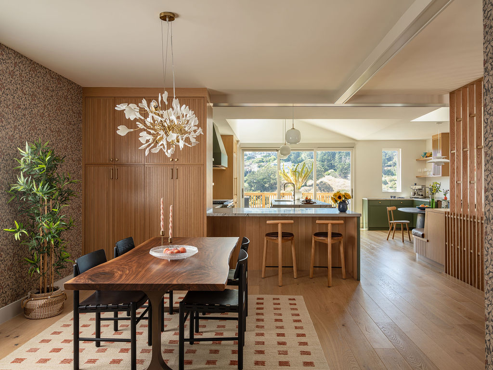
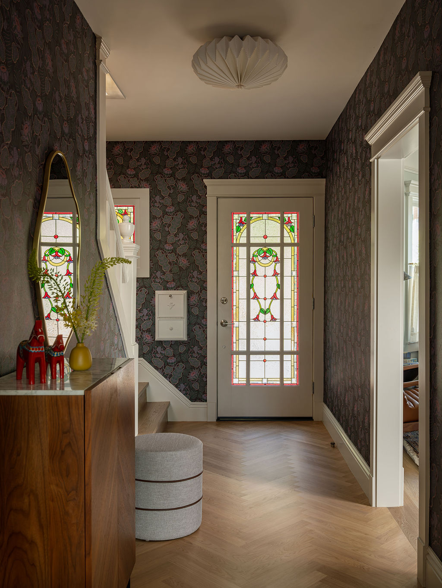
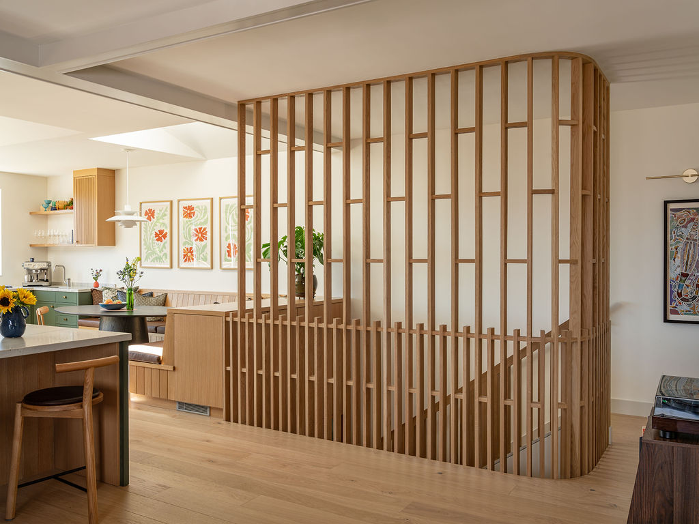
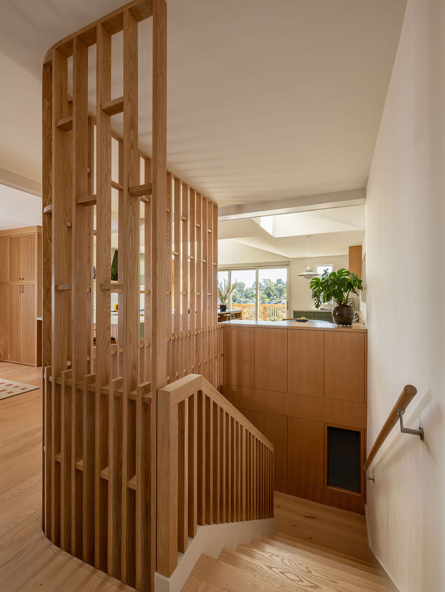
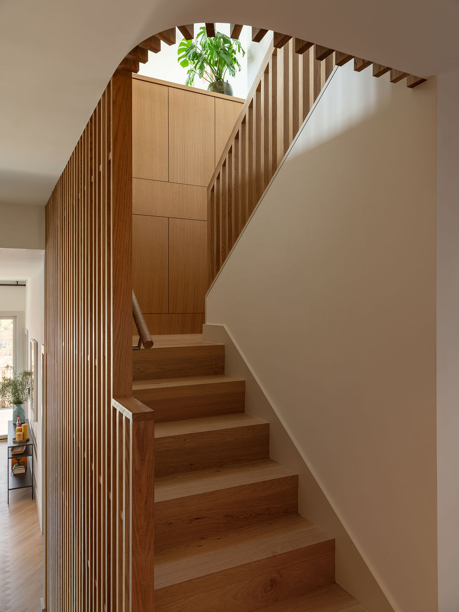
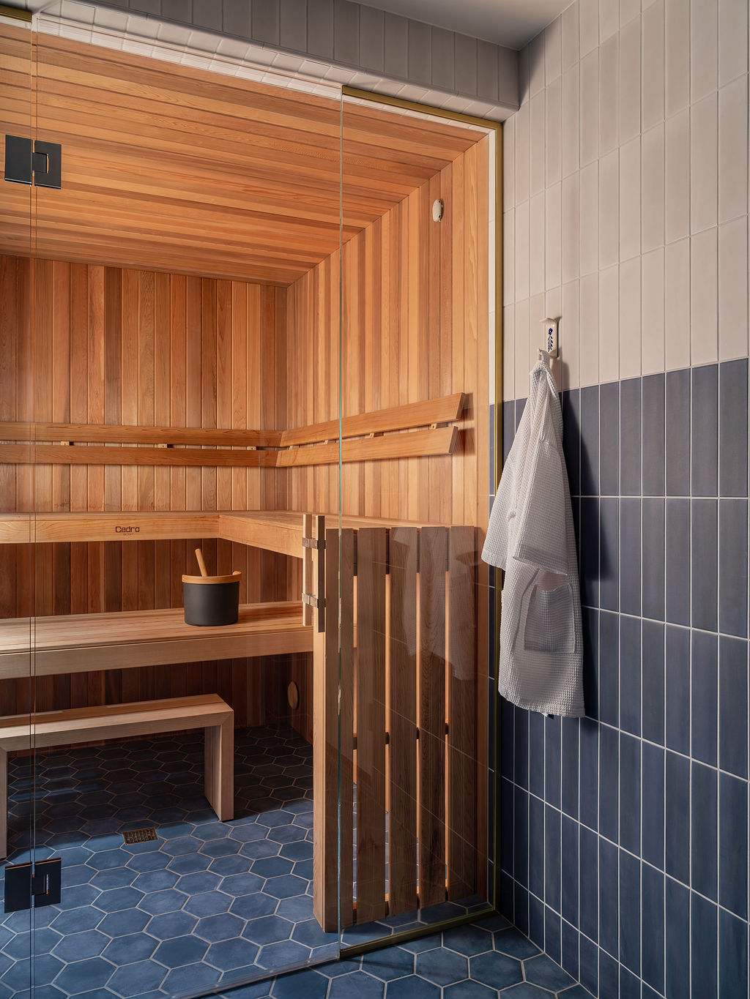
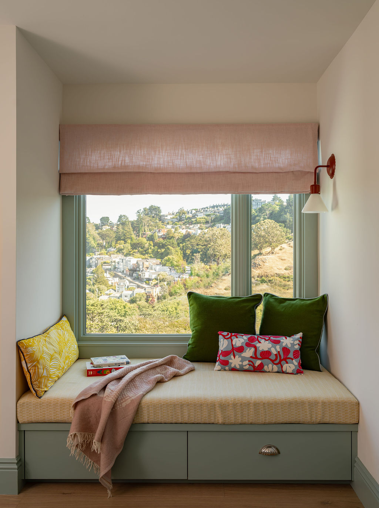
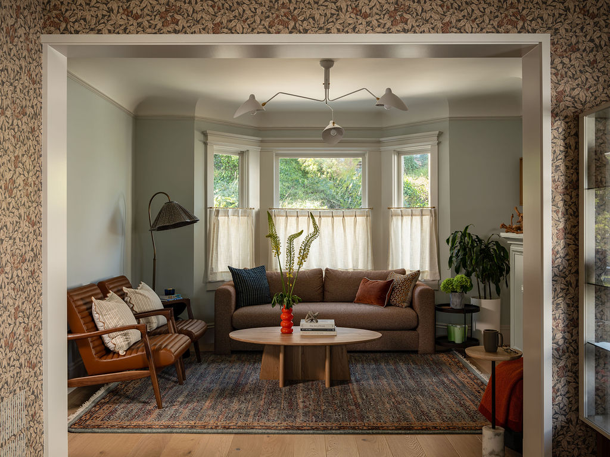
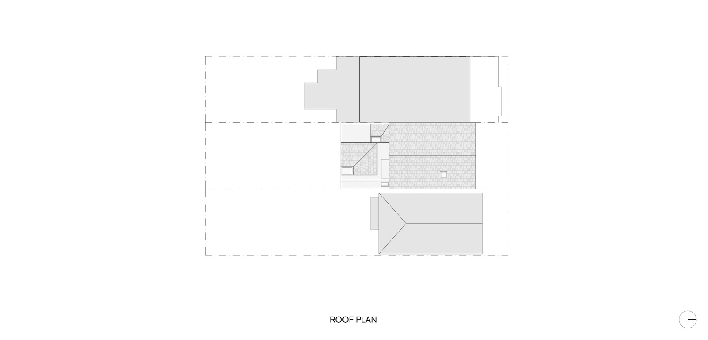
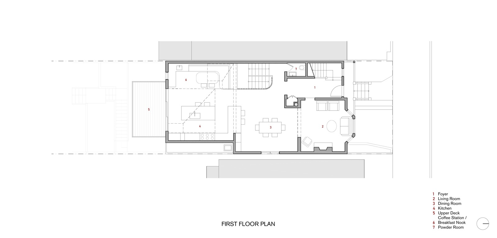
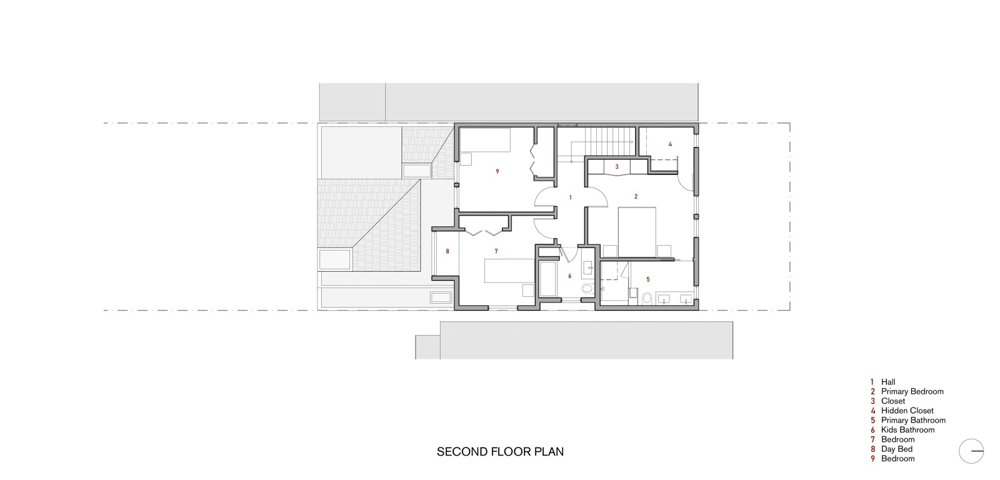
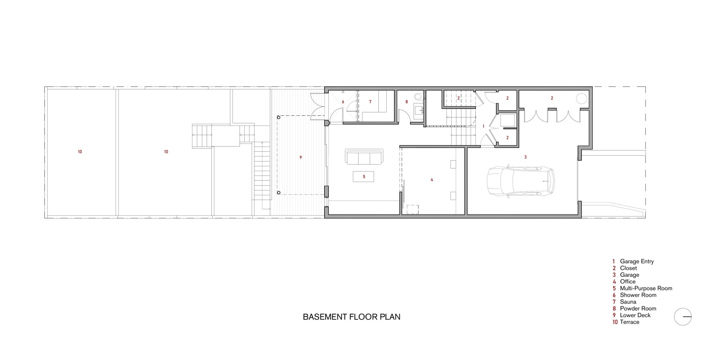
Project Team
Dorothy Shepard, Iveta Posledni, Sebastian Mancera
Photo Credit
Vivian Johnson
THREE PEAKS HOUSE
SAN FRANCISCO, CA
Perched on a steep hillside with sweeping views of Billy Goat Hill, an Edwardian single-family home in Noe Valley is reimagined as the “Three Peaks House” through a sculptural addition and renovation.
Two new pyramidal frustum roofs echo the surrounding hills and float over a light-filled kitchen and breakfast nook organized around a central island, the main gathering place for this young family. Circulation between the original and new spaces revolves around a new stair with a curved oak slat screen that integrates with the adjacent cabinetry. The stair creates a fluid connection between the garage entry and the living spaces while drawing natural, patterned light into the basement space.
Throughout the home, architectural materials and elements reflect the clients’ Nordic roots while preserving the original Victorian shell and details. A multi-tiered sauna and adjacent shower room open directly to the rear deck in the Finnish tradition.
© 2023 BACH ARCHITECTURE. All rights reserved. | 3752 20th Street, San Francisco, CA 94110 | (415) 425-8582 | info@bach-architecture.com